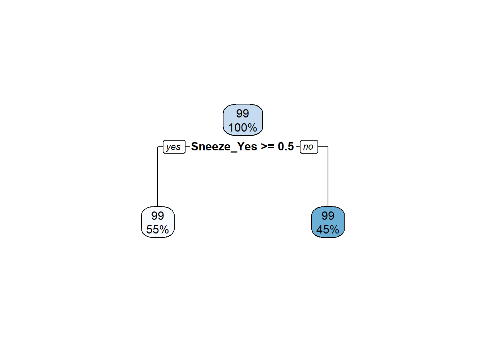

This is the final analysis in a series of three. To view previous analyses leading to this one, please visit my GitHub repository.
Create model linear regression model. Train and test sets will have a 70/30 split. In this section, create the cross-fold validation object. 5 folds repeated 5 times. Data sets for split and folds will be stratified on BodyTemp variable.
set.seed(123)
# Set up for Linear Regression
df_split <- initial_split(df, strata = BodyTemp, prop=7/10)
training_df <- training(df_split)
testing_df <- testing(df_split)
#Set up for cross-fold validation
folds <- vfold_cv(training_df, v = 5, repeats = 5, strata = BodyTemp)
# create recipe
bt_train_rec <- recipe(BodyTemp ~ ., data = training_df) %>%
step_dummy(all_nominal_predictors())
# Use step_dummy to transform categorical variables into dummy variables
lm_mod <- linear_reg() %>%
set_engine("lm")
bt_workflow <-
workflow() %>%
add_model(lm_mod) %>%
add_recipe(bt_train_rec)
bt_fit <- bt_workflow %>%
fit(training_df)
bt_fit %>%
extract_fit_parsnip() %>%
tidy()## # A tibble: 32 x 5
## term estimate std.error statistic p.value
## <chr> <dbl> <dbl> <dbl> <dbl>
## 1 (Intercept) 98.0 0.387 253. 0
## 2 SwollenLymphNodes_Yes -0.140 0.112 -1.25 0.211
## 3 ChestCongestion_Yes 0.193 0.116 1.66 0.0972
## 4 ChillsSweats_Yes 0.185 0.155 1.19 0.234
## 5 NasalCongestion_Yes -0.275 0.137 -2.00 0.0456
## 6 Sneeze_Yes -0.469 0.118 -3.96 0.0000855
## 7 Fatigue_Yes 0.278 0.204 1.37 0.173
## 8 SubjectiveFever_Yes 0.483 0.123 3.92 0.000103
## 9 Headache_Yes -0.0169 0.150 -0.112 0.911
## 10 Weakness_Mild 0.0697 0.234 0.298 0.766
## # ... with 22 more rowsEvaluate model performance
# Check the model performance
predict(bt_fit, testing_df)## # A tibble: 222 x 1
## .pred
## <dbl>
## 1 99.3
## 2 99.0
## 3 99.8
## 4 99.8
## 5 98.8
## 6 99.2
## 7 99.7
## 8 99.6
## 9 99.5
## 10 99.4
## # ... with 212 more rowsbt_aug_train <- augment(bt_fit, training_df)
bt_aug_train %>% select(BodyTemp, .pred)## # A tibble: 508 x 2
## BodyTemp .pred
## <dbl> <dbl>
## 1 97.8 98.8
## 2 98.1 98.5
## 3 98.1 98.6
## 4 98.2 98.6
## 5 97.8 99.0
## 6 98.2 98.4
## 7 98.1 98.1
## 8 98 99.5
## 9 97.7 98.8
## 10 98.2 99.1
## # ... with 498 more rowsbt_aug_test <- augment(bt_fit,testing_df)
bt_aug_test %>% select(BodyTemp, .pred)## # A tibble: 222 x 2
## BodyTemp .pred
## <dbl> <dbl>
## 1 100. 99.3
## 2 98.8 99.0
## 3 98.2 99.8
## 4 97.9 99.8
## 5 102. 98.8
## 6 99.3 99.2
## 7 97.8 99.7
## 8 99.5 99.6
## 9 99.7 99.5
## 10 98.8 99.4
## # ... with 212 more rowsbt_error_train <- bt_aug_train %>%
rmse(truth = BodyTemp, .pred)
bt_error_train$model <- "BodyTemp Training"
bt_error_test <- bt_aug_test %>%
rmse(truth = BodyTemp, .pred)
bt_error_test$model <- "BodyTemp Test"
bt_error_rmse <- bind_rows(bt_error_train, bt_error_test)
bt_error_rmse## # A tibble: 2 x 4
## .metric .estimator .estimate model
## <chr> <chr> <dbl> <chr>
## 1 rmse standard 1.10 BodyTemp Training
## 2 rmse standard 1.20 BodyTemp TestCreate a null model to compare the linear regression model.
# Create a null model
null_rec <- recipe(BodyTemp ~ 1, data = training_df) %>%
step_dummy(all_nominal_predictors())
null_wf <-
workflow() %>%
add_model(lm_mod) %>%
add_recipe(null_rec)
null_fit <- null_wf %>%
fit(training_df)
null_fit %>%
extract_fit_parsnip() %>%
tidy()## # A tibble: 1 x 5
## term estimate std.error statistic p.value
## <chr> <dbl> <dbl> <dbl> <dbl>
## 1 (Intercept) 98.9 0.0537 1842. 0Evaluate model performance.
# Check Null Model performance
predict(null_fit, testing_df)## # A tibble: 222 x 1
## .pred
## <dbl>
## 1 98.9
## 2 98.9
## 3 98.9
## 4 98.9
## 5 98.9
## 6 98.9
## 7 98.9
## 8 98.9
## 9 98.9
## 10 98.9
## # ... with 212 more rowsnull_aug_train <- augment(null_fit, training_df)
null_aug_train %>% select(BodyTemp, .pred)## # A tibble: 508 x 2
## BodyTemp .pred
## <dbl> <dbl>
## 1 97.8 98.9
## 2 98.1 98.9
## 3 98.1 98.9
## 4 98.2 98.9
## 5 97.8 98.9
## 6 98.2 98.9
## 7 98.1 98.9
## 8 98 98.9
## 9 97.7 98.9
## 10 98.2 98.9
## # ... with 498 more rowsnull_aug_test <- augment(null_fit,testing_df)
null_aug_test %>% select(BodyTemp, .pred)## # A tibble: 222 x 2
## BodyTemp .pred
## <dbl> <dbl>
## 1 100. 98.9
## 2 98.8 98.9
## 3 98.2 98.9
## 4 97.9 98.9
## 5 102. 98.9
## 6 99.3 98.9
## 7 97.8 98.9
## 8 99.5 98.9
## 9 99.7 98.9
## 10 98.8 98.9
## # ... with 212 more rowsnull_error_train <- null_aug_train %>%
rmse(truth = BodyTemp, .pred)
null_error_train$model <- "Null Training Model"
null_error_test <- null_aug_test %>%
rmse(truth = BodyTemp, .pred)
null_error_test$model <- "Null Testing Model"
null_error_rmse <- bind_rows(null_error_train,null_error_test)
null_error_rmse## # A tibble: 2 x 4
## .metric .estimator .estimate model
## <chr> <chr> <dbl> <chr>
## 1 rmse standard 1.21 Null Training Model
## 2 rmse standard 1.16 Null Testing ModelCreate a decision tree. Use the same data sets for training and the same cross-fold validation object.
# decision tree
# continue using training_df and testing_df for data sets
tune_spec <- decision_tree(
cost_complexity = tune(),
tree_depth = tune()
) %>%
set_engine("rpart") %>%
set_mode("regression")
tree_grid <- grid_regular(cost_complexity(),
tree_depth(),
levels = 5)
# create tree workflow with bodytemp train recipe
tree_wf <- workflow() %>%
add_model(tune_spec) %>%
add_recipe(bt_train_rec)
# create tree with new workflow
tree_res <- tree_wf %>%
tune_grid(
resamples = folds,
grid = tree_grid
)
tree_res %>%
collect_metrics()## # A tibble: 50 x 8
## cost_complexity tree_depth .metric .estimator mean n std_err .config
## <dbl> <int> <chr> <chr> <dbl> <int> <dbl> <chr>
## 1 0.0000000001 1 rmse standard 1.19 25 0.0181 Prepro~
## 2 0.0000000001 1 rsq standard 0.0361 25 0.00422 Prepro~
## 3 0.0000000178 1 rmse standard 1.19 25 0.0181 Prepro~
## 4 0.0000000178 1 rsq standard 0.0361 25 0.00422 Prepro~
## 5 0.00000316 1 rmse standard 1.19 25 0.0181 Prepro~
## 6 0.00000316 1 rsq standard 0.0361 25 0.00422 Prepro~
## 7 0.000562 1 rmse standard 1.19 25 0.0181 Prepro~
## 8 0.000562 1 rsq standard 0.0361 25 0.00422 Prepro~
## 9 0.1 1 rmse standard 1.21 25 0.0177 Prepro~
## 10 0.1 1 rsq standard NaN 0 NA Prepro~
## # ... with 40 more rowsEvaluate for the best model. The best-performing model has RMSE of 1.187.
tree_res %>%
show_best("rmse")## # A tibble: 5 x 8
## cost_complexity tree_depth .metric .estimator mean n std_err .config
## <dbl> <int> <chr> <chr> <dbl> <int> <dbl> <chr>
## 1 0.0000000001 1 rmse standard 1.19 25 0.0181 Preprocesso~
## 2 0.0000000178 1 rmse standard 1.19 25 0.0181 Preprocesso~
## 3 0.00000316 1 rmse standard 1.19 25 0.0181 Preprocesso~
## 4 0.000562 1 rmse standard 1.19 25 0.0181 Preprocesso~
## 5 0.0000000001 4 rmse standard 1.20 25 0.0187 Preprocesso~# autoplot tree_res. This will show what happened during the tuning process.
tree_res %>% autoplot()best_tree <- tree_res %>%
select_best("rmse")
#finalize workflow
final_wf <- tree_wf %>%
finalize_workflow(best_tree)
final_wf## == Workflow ====================================================================
## Preprocessor: Recipe
## Model: decision_tree()
##
## -- Preprocessor ----------------------------------------------------------------
## 1 Recipe Step
##
## * step_dummy()
##
## -- Model -----------------------------------------------------------------------
## Decision Tree Model Specification (regression)
##
## Main Arguments:
## cost_complexity = 1e-10
## tree_depth = 1
##
## Computational engine: rpart# final fit - MADA instructions say with training data, but function requires split data
final_fit <-
final_wf %>%
last_fit(df_split)
final_fit %>%
collect_metrics()## # A tibble: 2 x 4
## .metric .estimator .estimate .config
## <chr> <chr> <dbl> <chr>
## 1 rmse standard 1.19 Preprocessor1_Model1
## 2 rsq standard 0.000889 Preprocessor1_Model1final_fit %>%
collect_predictions() %>%
rmse(BodyTemp, .pred)## # A tibble: 1 x 3
## .metric .estimator .estimate
## <chr> <chr> <dbl>
## 1 rmse standard 1.19final_tree <- extract_workflow(final_fit)
final_tree## == Workflow [trained] ==========================================================
## Preprocessor: Recipe
## Model: decision_tree()
##
## -- Preprocessor ----------------------------------------------------------------
## 1 Recipe Step
##
## * step_dummy()
##
## -- Model -----------------------------------------------------------------------
## n= 508
##
## node), split, n, deviance, yval
## * denotes terminal node
##
## 1) root 508 742.9363 98.93642
## 2) Sneeze_Yes>=0.5 280 259.6477 98.69107 *
## 3) Sneeze_Yes< 0.5 228 445.7356 99.23772 *# plot tree with rpart.plot
final_tree %>%
extract_fit_engine() %>%
rpart.plot(roundint = FALSE)
Create LASSO model
# LASSO
# continue using same data split and linear regression model
# continue using same bt_train_rec
lasso_wf <-
workflow() %>%
add_model(lm_mod) %>%
add_recipe(bt_train_rec)
lasso_reg_grid <- tibble(penalty = 10^seq(-4, -1, length.out = 30))
lasso_res <- # this will throw a warning saying there are no tuning parameters
lasso_wf %>%
tune_grid(folds,
grid = lasso_reg_grid,
control = control_grid(save_pred = TRUE),
metrics = metric_set(rmse))## Warning: No tuning parameters have been detected, performance will be evaluated
## using the resamples with no tuning. Did you want to [tune()] parameters?Evaluate Lasso model. The highest-performing model has RMSE of 1.199
lasso_res %>%
show_best("rmse")## # A tibble: 1 x 6
## .metric .estimator mean n std_err .config
## <chr> <chr> <dbl> <int> <dbl> <chr>
## 1 rmse standard 1.18 25 0.0167 Preprocessor1_Model1# select best
lasso_best <- lasso_res %>%
select_best("rmse")
lasso_best## # A tibble: 1 x 1
## .config
## <chr>
## 1 Preprocessor1_Model1# finalize workflow
final_lasso_wf <-
lasso_wf %>%
finalize_workflow(lasso_best)
# final fit with split data
final_lasso_fit <- final_lasso_wf %>%
last_fit(df_split)
final_lasso_fit %>%
collect_metrics()## # A tibble: 2 x 4
## .metric .estimator .estimate .config
## <chr> <chr> <dbl> <chr>
## 1 rmse standard 1.20 Preprocessor1_Model1
## 2 rsq standard 0.0231 Preprocessor1_Model1Create random forest using the same data sets and the same cross-validation object.
# Forest
# use same dataset and recipes
# how many cores does my computer have?
cores <- parallel::detectCores()
cores## [1] 8Set the model engine. Leaving mtry and min_n eqult to tune() for now. Running the model this way will help evaluate how to tune the model using these parameters.
rf_mod <- rand_forest(mtry = tune(), min_n = tune(), trees = 1000) %>%
set_engine("ranger", num.threads = cores) %>%
set_mode("regression")
rf_wf <- workflow() %>%
add_model(rf_mod) %>%
add_recipe(bt_train_rec)
rf_mod %>% parameters()## Collection of 2 parameters for tuning
##
## identifier type object
## mtry mtry nparam[?]
## min_n min_n nparam[+]
##
## Model parameters needing finalization:
## # Randomly Selected Predictors ('mtry')
##
## See `?dials::finalize` or `?dials::update.parameters` for more information.rf_res <- rf_wf %>%
tune_grid(folds,
grid = 25,
control = control_grid(save_pred = TRUE),
metrics = metric_set(rmse))## i Creating pre-processing data to finalize unknown parameter: mtryEvaluate the random forest. The best-performing model has RMSE of 1.177.
rf_res %>%
show_best(metric = "rmse")## # A tibble: 5 x 8
## mtry min_n .metric .estimator mean n std_err .config
## <int> <int> <chr> <chr> <dbl> <int> <dbl> <chr>
## 1 4 32 rmse standard 1.16 25 0.0168 Preprocessor1_Model07
## 2 6 26 rmse standard 1.16 25 0.0167 Preprocessor1_Model24
## 3 3 22 rmse standard 1.16 25 0.0168 Preprocessor1_Model25
## 4 6 17 rmse standard 1.17 25 0.0167 Preprocessor1_Model06
## 5 12 37 rmse standard 1.17 25 0.0168 Preprocessor1_Model23rf_res %>%
collect_predictions()## # A tibble: 63,500 x 8
## id id2 .pred .row mtry min_n BodyTemp .config
## <chr> <chr> <dbl> <int> <int> <int> <dbl> <chr>
## 1 Repeat1 Fold1 98.9 9 10 24 97.7 Preprocessor1_Model01
## 2 Repeat1 Fold1 99.1 10 10 24 98.2 Preprocessor1_Model01
## 3 Repeat1 Fold1 98.6 27 10 24 97.4 Preprocessor1_Model01
## 4 Repeat1 Fold1 98.9 31 10 24 97.7 Preprocessor1_Model01
## 5 Repeat1 Fold1 98.9 33 10 24 97.9 Preprocessor1_Model01
## 6 Repeat1 Fold1 98.7 41 10 24 98.2 Preprocessor1_Model01
## 7 Repeat1 Fold1 98.8 46 10 24 98.2 Preprocessor1_Model01
## 8 Repeat1 Fold1 98.9 49 10 24 98.1 Preprocessor1_Model01
## 9 Repeat1 Fold1 99.0 53 10 24 98.1 Preprocessor1_Model01
## 10 Repeat1 Fold1 99.1 64 10 24 98 Preprocessor1_Model01
## # ... with 63,490 more rows# autoplot to show how the model was tuned
autoplot(rf_res)#select best
rf_best <-
rf_res %>%
select_best(metric = "rmse")
rf_best## # A tibble: 1 x 3
## mtry min_n .config
## <int> <int> <chr>
## 1 4 32 Preprocessor1_Model07#finalize workflow
final_rf_wf <-
rf_wf %>%
finalize_workflow(rf_best)
# final fit with split data
final_fit_rf <- final_rf_wf %>%
last_fit(df_split)
final_fit_rf %>%
collect_metrics()## # A tibble: 2 x 4
## .metric .estimator .estimate .config
## <chr> <chr> <dbl> <chr>
## 1 rmse standard 1.17 Preprocessor1_Model1
## 2 rsq standard 0.0101 Preprocessor1_Model1After completing the tree, LASSO, and random forest models, LASSO had the greatest RMSE (~1.2) and the random forest had the lowest RMSE (~1.77). Based on this alone the best model seems to be the random forest. It’s also important to note that the random forest seems to be a much more robust approach than the other two. Given the high number of repetitions (1,000 trees), it would make sense that this model performs better than the others. The final part of this project will utilize test data to evaluate how the random forest model performs.
rf_last_mod <-
rand_forest(mtry = 6,min_n = 28, trees = 1000) %>%
set_engine("ranger", num.threads = cores) %>%
set_mode("regression")
rf_last_wf <-
final_rf_wf %>%
update_model(rf_last_mod)
# using split data again (can't specifically use test data)
rf_last_fit <-
rf_last_wf %>%
last_fit(df_split)
collect_metrics(rf_last_fit)## # A tibble: 2 x 4
## .metric .estimator .estimate .config
## <chr> <chr> <dbl> <chr>
## 1 rmse standard 1.18 Preprocessor1_Model1
## 2 rsq standard 0.00876 Preprocessor1_Model1The RMSE of the random forest model is 1.18, which is still among the best scores of all the models tried. This final test does show that the random forest seems to be the most robust model created, compared to the LASSO and the decision tree.